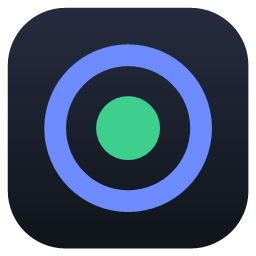
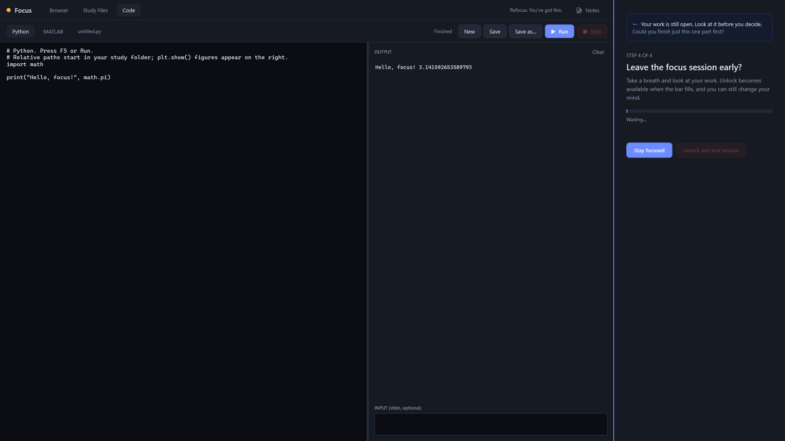
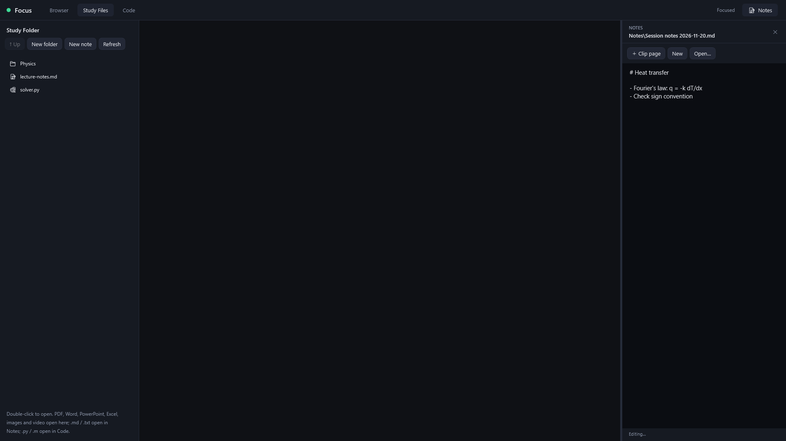
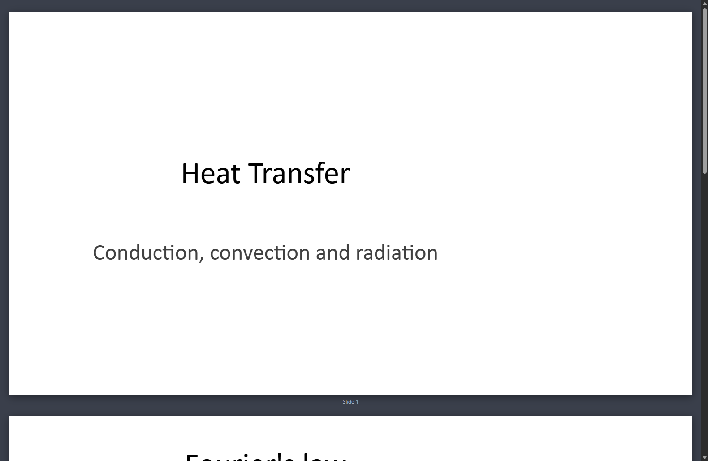

Focus StudyFocus Study is a free, open-source study app for Windows. Set a session length, and your PC turns into a locked, fullscreen study space. You still get a browser (AI sites included), your study folder, notes, Office files, and Python / MATLAB.
Single file, no install. Try it first with FocusStudy.exe --demo, the same screens without the lock.

Leaving early takes four steps, and your work stays in view the whole time.
Built to keep you in the work, not to watch you. No webcam, no account, nothing leaves your PC.
Fullscreen with no title bar, no taskbar and no clock. Win key, Alt+Tab and friends are blocked; extra monitors go dark.
Alt+F4 starts the exit steps: a reason, a typed pledge, a sum, then a cool-down. Ctrl+Alt+Del always works for emergencies.
AI tools and websites are allowed. Blocked sites can't load, and off-topic pages get a gentle nudge.
No input for a few minutes? It asks whether you're still there. Videos and running code don't count as idle.
Only your chosen study folder is reachable. Downloads land in it, and uploads can only come from it.
A notes panel beside the browser, files and code. It autosaves to your folder, and one click clips the current page as a source.
Opens Word, Excel and PowerPoint files with bundled open-source viewers. PDF, images and video work too.
A built-in editor runs Python and MATLAB: your installed MATLAB, or free GNU Octave. Plots show up beside the output.

Notes stay open beside whatever you're working on.

PowerPoint, Word and Excel open right inside the app.
Pick the file for your PC. Not sure? Settings → System → About → "System type".
| File | For |
|---|---|
| FocusStudy.exe | Intel / AMD 64-bit (most PCs) |
| FocusStudy-arm64.exe | ARM laptops: Snapdragon, Surface Pro X, Copilot+ PCs |
Needs Windows 10 or 11 with the WebView2 runtime (built into Windows 11). Optional: Python, and MATLAB or GNU Octave. All versions are on the Releases page.
Changed something, or just want to build it yourself? GitHub can build the exe for you for free. You don't need to install anything.
Settings.cs; the screens are in the .xaml files.FocusStudy.exe and FocusStudy-arm64.exe.v1.0.0, and publish. The build runs and attaches both exes to that release automatically.
Install the .NET 10 SDK, then:
git clone https://github.com/duskmoonstudio/FocusStudy.git
cd FocusStudy
powershell -ExecutionPolicy Bypass -File publish.ps1Your exe is in dist\FocusStudy.exe. For ARM64, add -Runtime win-arm64.
No Git? Use Code → Download ZIP on GitHub instead of git clone.
While you're changing things, run it with --demo, so a bug can't trap you in a locked session.